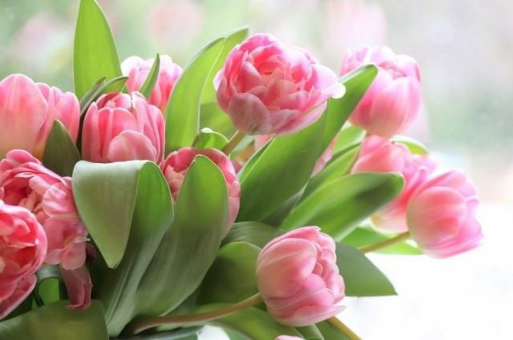
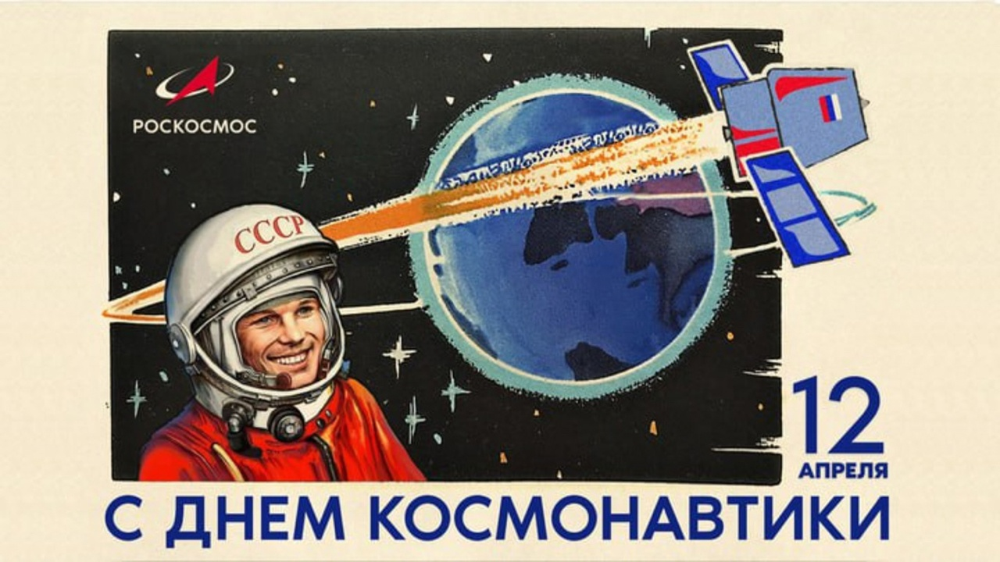
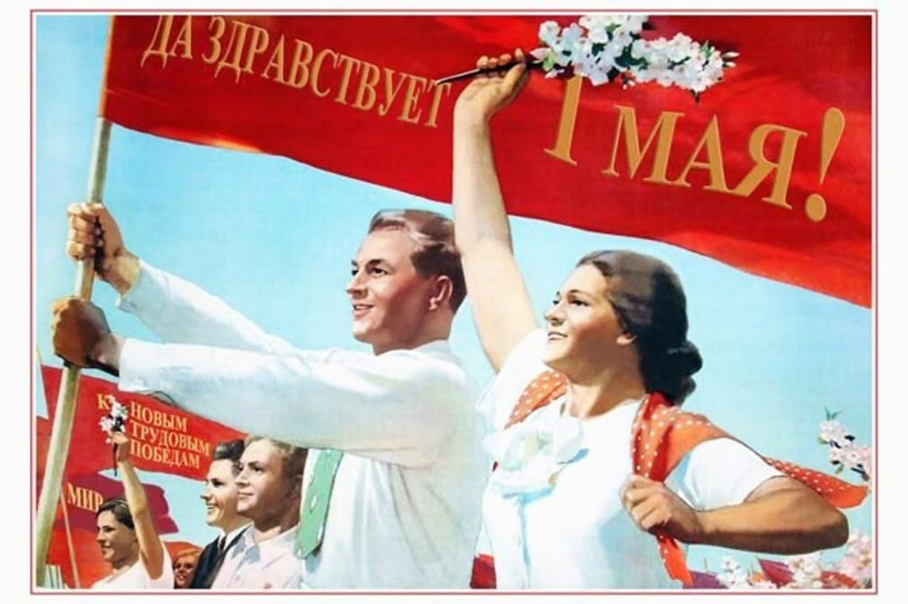
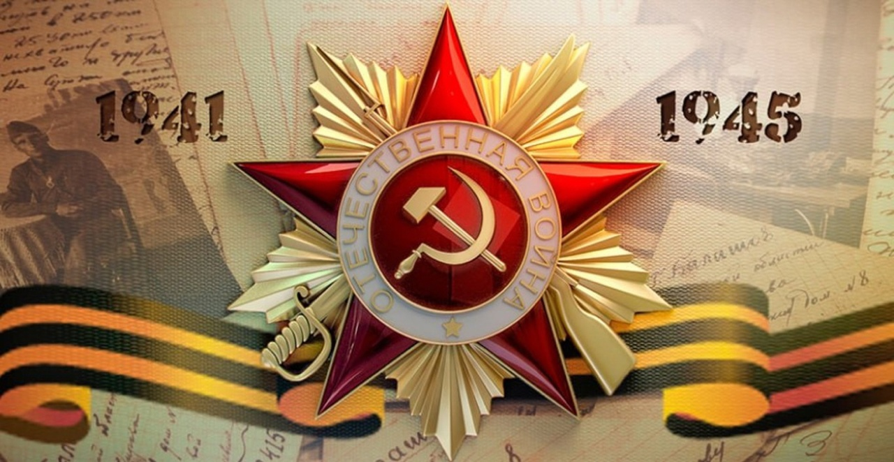

Любое время года богато на разнообразные праздники. Однако весна все же пора особая. Пробуждение всего живого, расцвет природы, много солнца и тепла. Множество интересных, а порой и необычных дат ждет нас в марте, апреле, мае.
Март — первый весенний месяц. Его называют «утром весны», «утром года», «солнечником». Солнце поднимается выше и светит ярче, а дни становятся длиннее.
· Женский день - 8 марта
Сейчас 8 марта мы больше празднуем приход весны. Женщины подобны этой цветущей поре. Поэтому одновременно и прекрасная половина человечества отмечает свой праздник, получает поздравления, а также самые лучшие подарки, в том числе в виде приглашений на различные музыкальные, интересные и торжественные события
Апрель - начинает свое наступление с обильного снеготаяния. Солнце уже высоко поднимается над горизонтом, а воздух, с каждым днем прибавляющий в тепле, легкими ветрами разносит по природным просторам лесов и рек запах весны.
· День смеха - 1 апреля
В нашей стране 1 апреля отмечают День смеха. Совсем неважно как люди называют этот день, важно, что 1 апреля по всему миру раздается громкий смех, происходят добрые дружеские розыгрыши и главное, что никто друг на друга не обижается.

· День космонавтики - 12 апреля
12 апреля празднуется Всемирный день космонавтики. Именно с этой датой связан первый полет человека в космос, этот день, по сути, стал началом новой эры человеческой свободы, когда он смог преодолеть ограниченное земное пространство, и устремился ввысь к неведомым далям космоса.

Май - месяц май в народе называют «веселым» месяцем. В этом месяце прилетают к нам и последние перелетные птицы: в начале месяца кукушки, ласточки, соловьи (обычно ночью), затем перепела, коростели, малиновки и позднее всех стрижи и иволги. Намного оживленнее становятся леса, луга и поля.
· Праздник Весны и Труда - 1 мая
Сейчас Первомай это праздник весны и труда, праздник всех людей, кто трудится, создавая богатство страны. Этот день символизирует начало весны и несет в себе большой эмоциональный заряд весеннего пробуждения.

· День Победы - 9 мая
9 мая – День Победы советского народа в Великой Отечественной войне 1941–1945 гг. В День Победы во многих городах России проводятся военные парады и праздничные салюты, в Москве производится организованное шествие к Могиле Неизвестного Солдата с церемонией возложения венков, в крупных городах — праздничные шествия и фейерверки.